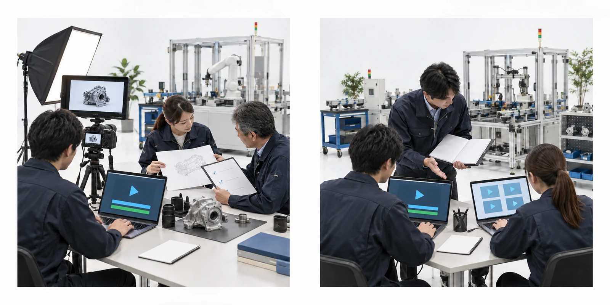
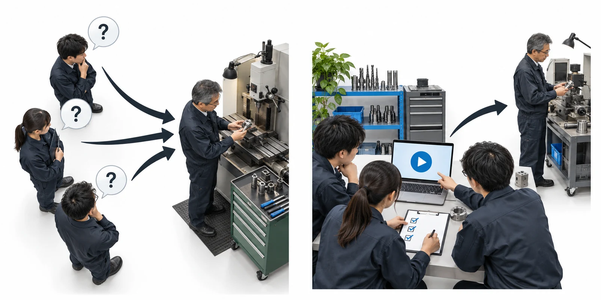
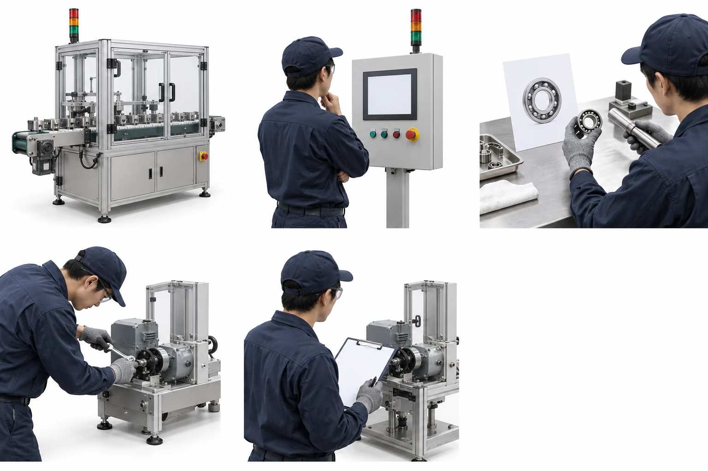
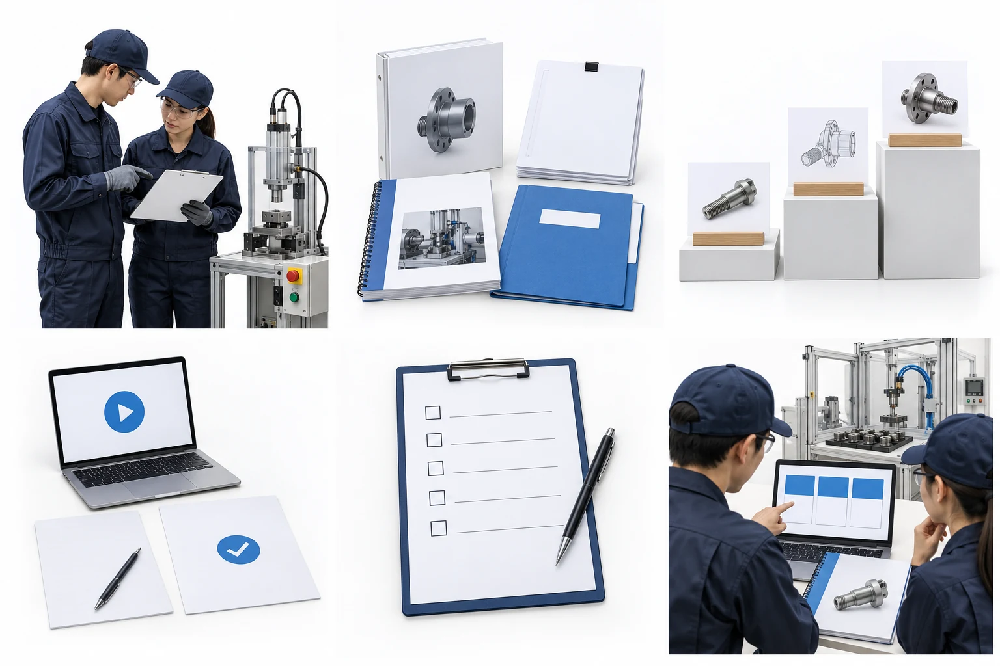

丸ごと任せる
2〜3か月
- ロアニクス
- 棚卸しから教材と運営の形まで作る
- 貴社
- 窓口1名
詳しい方への聞き取り数回＋事実確認

教育の変化

新人が質問する → ベテランが毎回説明する
教材とテストで学ぶ → 難しい所を相談する
最初の1時間
エンジニアリングの仕事を工程に分け 詳しい方から徹底して伺います
例 設備が止まったときの対応

印の位置は一例です 貴社の工程に合わせて聞き取ります
作るものと進める順番

2つの進め方

ヒアリングのあとにお見積り
AIの役割
AIを使わない形も選べます
資料の扱いとAIの利用範囲は 着手前に書面で決めます
目指す変化
始める前に測り方を決め 同じ説明の回数・外注の状況・学習の理解度を追います
担当者